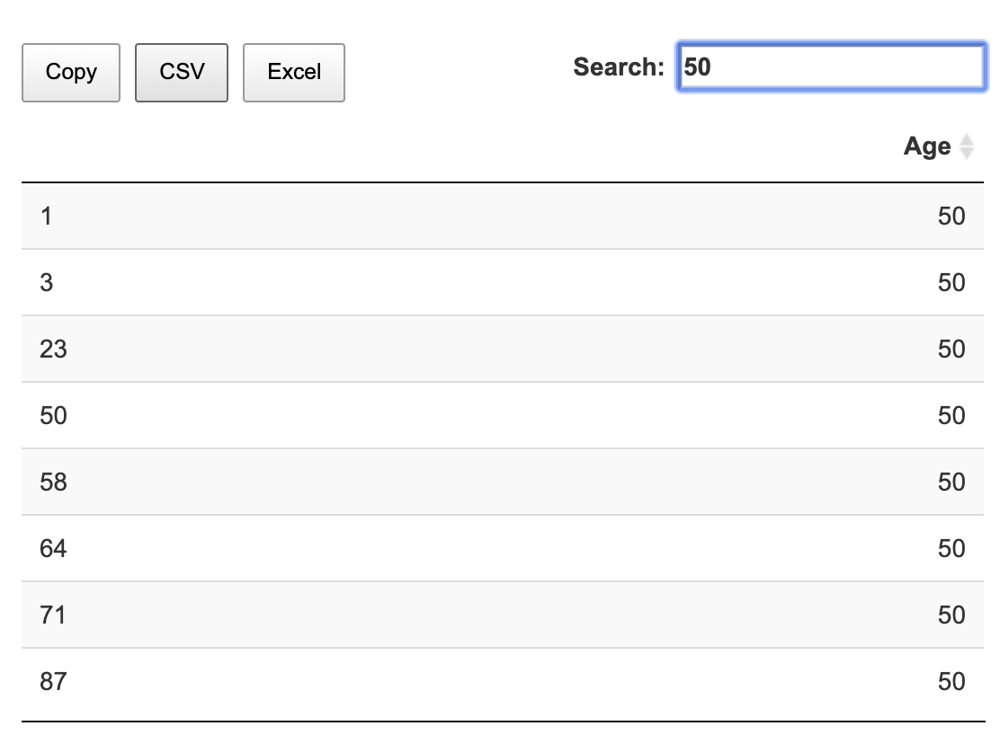
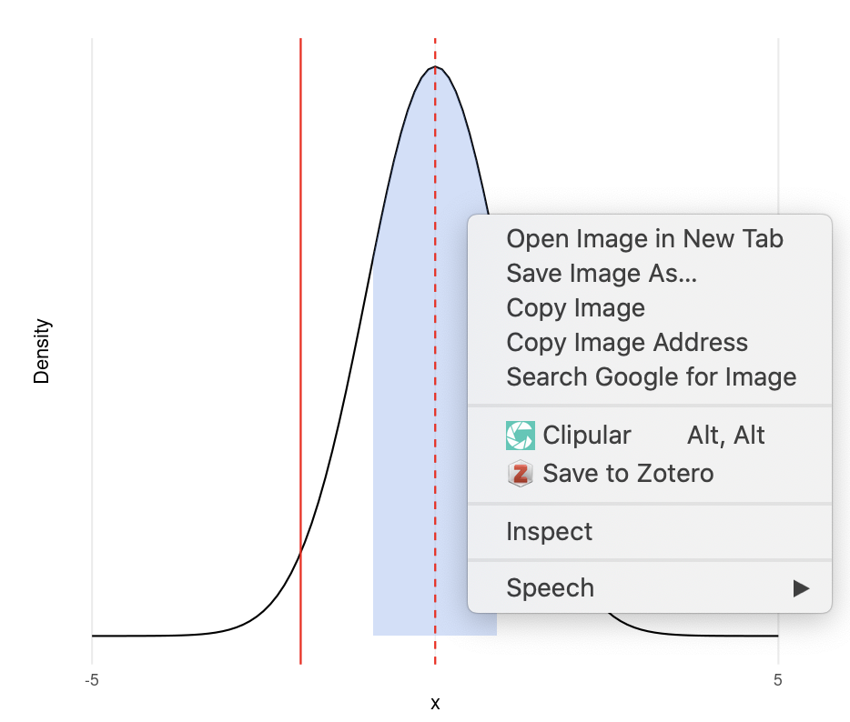
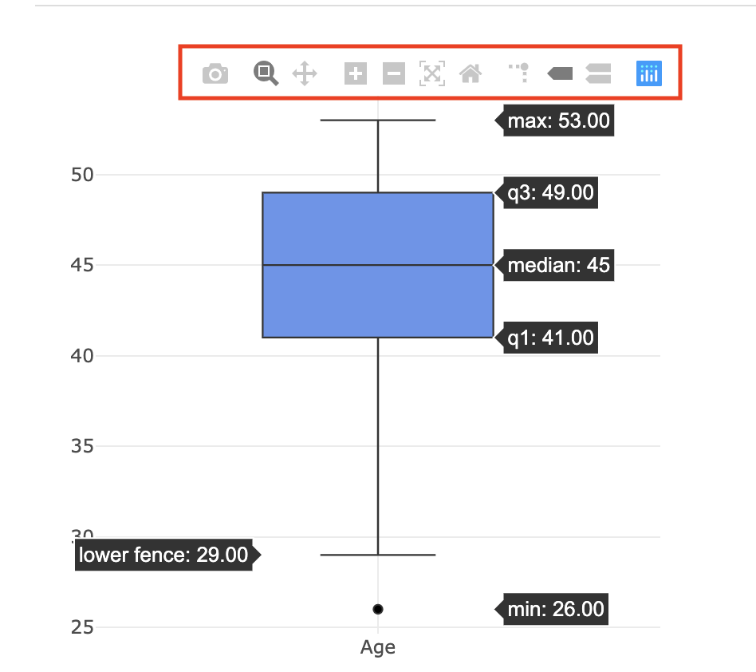
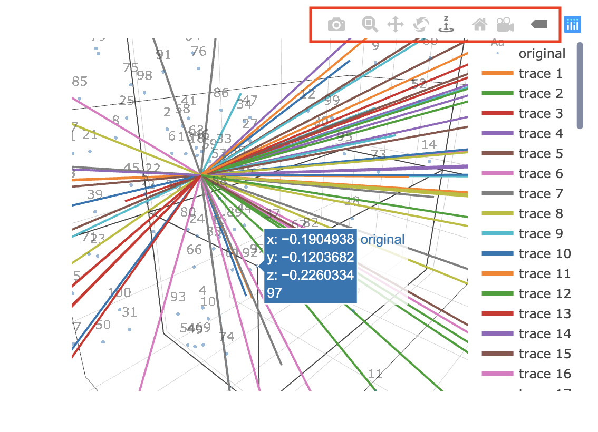

Features of outputs in the Area 3
Statistical results includes statistical tables and plots.
1. Statistical tables
Most tables in MEPHAS are shown by DT package.

Tables are shown for Data Preview and display the Results
The tables are easy to save and search numbers
2. Statistical plots
2.1. Three types of plots
Plots in MEPHAS are shown by ggplot2 package and plotly package. 2D ggolot, 2D plotly, and 3D plotly are used in MEPHAS. These plots are easy to save.

- Save ggolot2 plots: right click can save the plot as image

- Save 2D plotly plots: click the camera icon.

- Save 3D plotly plots: click the camera icon. 3D plots need some time to load.
3. The overview of statistical plots
3.1. 2D ggplot
- Distribution plot
3.2. 2D plotly
3.2.1. To plot distribution
Histogram
Density plot
QQ plot
3.2.2. To plot descriptive statistics
Box plot
Mean and SD plot
3.2.2. To plot proportion
Pie plot
Bar plot
3.2.3. Plots in ANOVA
- Mean plot in line to show the marginal mean plot
3.2.4. Plots in Linear regression
Scatter plot between 2 continuous variables
Residuals plot
3.2.5. Plots in logistic regression
Scatter plot between binary variable and continuous variable
ROC plot
3.2.6. Plots in survival analysis
Survival / Hazard plots
Martingale residuals, deviance residuals, and Cox-snell residuals plot
Integrated Brier score plot
Time-dependent AUC plot
3.2.6. Plots in PCA and EFA
Parallel analysis plot to decide the number of components
Correlation matrix plot
3.2.6. Plots in PCA, EFA, PCR, PLSR, and SPLSR
Component plot
Loading plot
Biplot for component and loading
3.3. 3D plotly
3D Scatter plot in linear regression
3D biplot in dimensional analysis